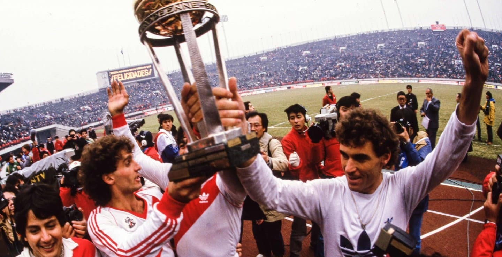

⬅ Inicio
COPA INTERCONTINENTAL
TORNEO
La Copa Intercontinental 1986 fue la vigésimo quinta edición del torneo que enfrentaba al campeón de la Copa Libertadores de América con el campeón de la Copa de Campeones de Europa. Fue la séptima edición disputada a partido único en Japón.
EQUIPOS PARTICIPANTES
Conmebol (Sudamérica)
River Plate Campeón de la Copa Libertadores de América (1986)
UEFA (Europa)
Steaua București Campeón de la Copa de Campeones de Europa (1985-86)
SEDE
CIUDAD
ESTADIO
TOKIO
Ficha del partido
PARTIDO ÚNICO
Se enfrentó el C. A. River Plate de Argentina, campeón de la Copa Libertadores 1986; y el F. C. Steaua București de Rumania, campeón de la Copa de Campeones de Europa 1985-86. Ganó River por 1:0 con gol de Antonio Alzamendi, obteniendo así su único título en el torneo. Además, se convirtió en el primer equipo en la historia del fútbol argentino en conseguir un triplete en un año. Steaua București utilizó un uniforme especial para la ocasión, de color celeste, evocaba los inicios del club. En dicho partido, se retiró profesionalmente el destacado mediapunta de River, Norberto Alonso.
